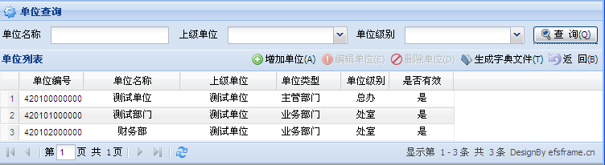
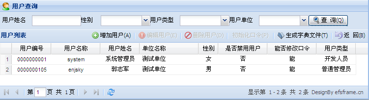

EfsFrame框架应用模型介绍
单位、用户管理
任何一个应用系统都离不开单位、用户的管理，所有的权限分配都围绕不同的单位级别的不同类型用户展开，所以在EfsFrame 框架中，我们将此部分默认到系统中，并给了一些常规的字段，但是在实际的项目应用中，可能需要对这部分进行相应的修改，特别是单位类型、单位级别、用户类型这些字段，可以根据自身的业务需要来进行调整，以便更加灵活的实现各种权限的分配。  